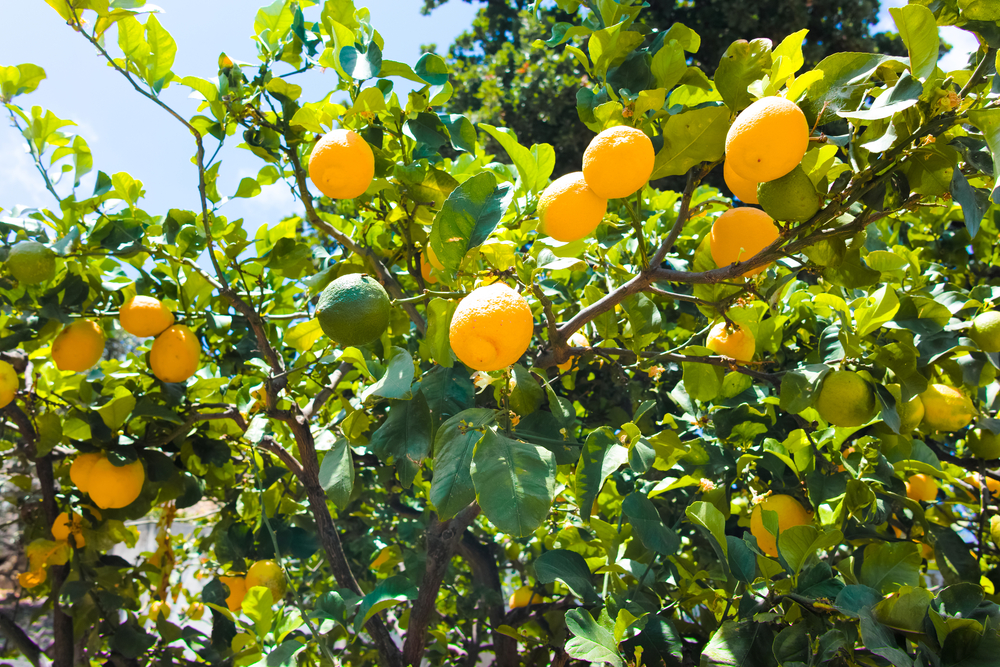
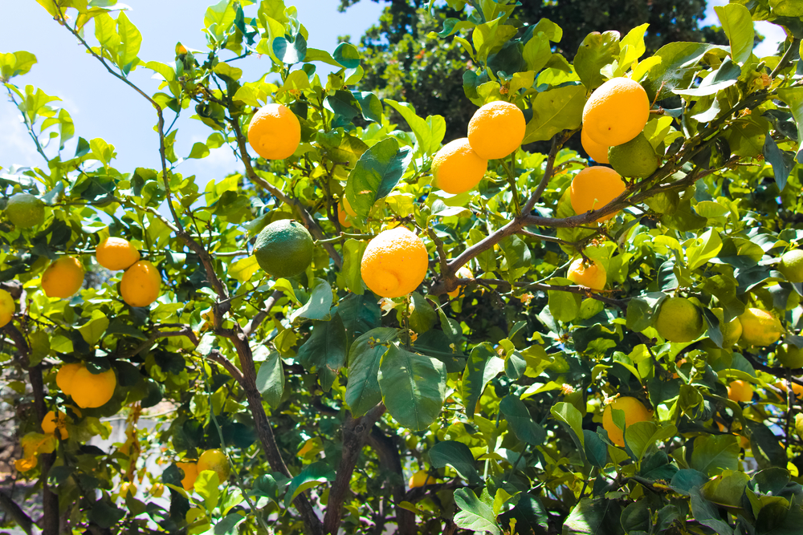

Olá! Meu nome é Antonio D Reducino estou cursando Análise e desenvolvimento de sistemas pela Uninter, logo abaixo uma breve história sobre minha vida até aqui.
Cresci numa pacata cidade do estado de São Paulo e tive uma infância comum para uma criança na década de 80. Comecei no meu primeiro emprego aos 15 e aos 18 servi no exército e lá permaneci por 30 meses, neste tempo passei por todo o aprendizado militar, no que se destaca minha primeira viagem internacional, à missão de paz no Haití. Vivenciar os sérios problemas daquele pais me ensinou a valorizar a vida tranquila e farta que levo aqui no Brasil. Voltando para casa dei baixa no serviço militar e voltei a trabalhar no comércio, nos ultimos 11 anos até 2021 trabalhei em escritório e vivia soterrado atraz de pilhas de Notas fiscais, boletos, tributos e todas as mazélas do mundo administrativo.
Com a chegada da pandemia em 2020 e com a "quebra" de milhares de empresas (incluisive a que eu trabalhava) decidi então vender tudo o que tinha em São Paulo e me "mandar" para o Mato grosso do Sul, um antigo sonho que partilhava com meu pai e que realizamos em 2022. Hoje gosto de pescar, criar pássaros e plantar árvores frutíferas no quintal. Os últimos 25 anos de trabalho me possibilitaram mudar de um provavél quadro de infarto aos 50 (por estress, má alimentação e sedentarismo ) para emagresser 20kilos em 2 anos apenas caminhando toda manhã, me alimentando corretamente e nada de estress. E chegamos então á 2024, ano no qual estou cursando ADS, curso este que sempre tive interesse e que agora se fez possível para mim ingressar, estou gostando bastante até aqui... espero que siga assim até o final.
 
